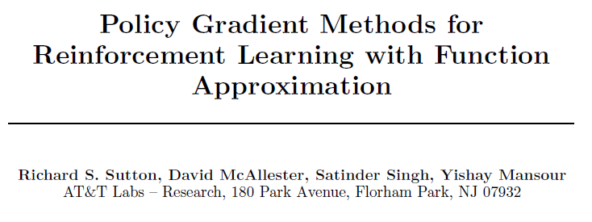
论文分成四部分。第一部分指出策略梯度在两种期望回报定义下都成立（定理一）。第二部分提出，如果 $Q^{\pi}$ 被函数 $f_w$ 近似时且满足兼容（compatible）条件，以 $f_w$ 替换策略梯度中的 $Q^{\pi}$公式也成立（定理二）。第三部分举Gibbs分布的策略为例，如何应用 $Q^{\pi}$近似函数来实现策略梯度算法。第四部分证明了近似函数的策略梯度迭代法一定能收敛到局部最优解。附录部分证明了两种定义下的策略梯度定理。
1. 策略梯度定理
对于Agent和环境而言，可以分成episode和non-episode，后者的时间步骤可以趋近于无穷大，但一般都可以适用两种期望回报定义。一种是单步平均reward ，另一种是指定唯一开始状态并对trajectory求 $\gamma$-discounted 之和，称为开始状态定义。两种定义都考虑到了reward的sum会趋近于无穷大，通过不同的方式降低了此问题的概率。
A. 平均reward定义
目标函数 $\rho(\pi)$ 定义成单步的平均reward，这种情况下等价于稳定状态分布下期望值。
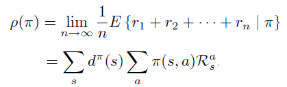
稳定状态分布定义成无限次数后状态的分布。
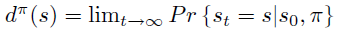
此时，$Q^{\pi}$ 定义为无限步的reward sum 减去累积的单步平均 reward $\rho(\pi)$，这里减去$\rho(\pi)$是为了一定程度防止 $Q^{\pi}$没有上界。
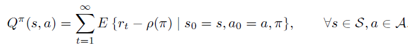
B. 开始状态定义
在开始状态定义方式中，某指定状态$s_0$作为起始状态，$\rho(\pi)$ 的定义为 trajectory 的期望回报，注意由于时间步骤 t 趋近于无穷大，必须要乘以discount 系数 $\gamma < 1$ 保证期望不会趋近无穷大。
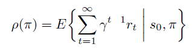
$Q^{\pi}$ 也直接定义成 trajectory 的期望回报。
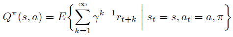
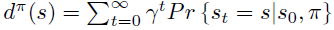
策略梯度定理
论文指出上述两种定义都满足策略梯度定理，即目标 $\rho$ 对于参数 $\theta$ 的偏导不依赖于 $d^{\pi}$ 对于 $\theta$ 偏导，仅取决
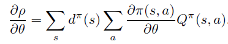
论文中还提到策略梯度定理公式和经典的William REINFORCE算法之间的联系。REINFORCE算法即策略梯度的蒙特卡洛实现。
联系如下：
首先，根据策略梯度定理，如果状态 s 是通过 $\pi$ 采样得到，则下式是$\partial \rho \over \partial \theta $ 的无偏估计。注意，这里action的summation和 $\pi$ 是无关的。
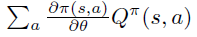
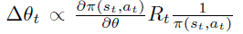
2. 函数近似的策略梯度
论文第二部分，进一步引入 $Q_{\pi}$ 的近似函数 $f_w$: $ \mathcal{S} \times \mathcal{A} \rightarrow \Re $。
如果我们有$Q_{\pi}(s_t, a_t)$的无偏估计，例如 $R_t$，很自然，可以让 $\partial f_w \over \partial w$ 通过最小化 $R_t$ 和 $f_w$之间的差距来计算。
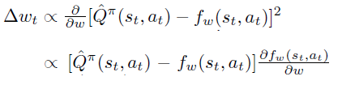
当拟合过程收敛到局部最优时，策略梯度定理中右边项对于 $w$ 求导为0，可得(3)式。
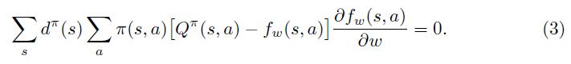
至此，引出策略梯度定理的延续，即定理2：当 $f_w$ 满足(3)式同时满足(4)式（称为compatible条件时），可以用 $f_w(s, a)$替换原策略梯度中的 $Q_{\pi}(s,a)$
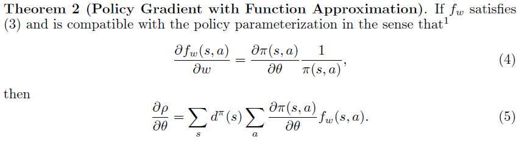
3. 一个应用示例
假设一个策略用features的线性组合后的 Gibbs分布来生成，即：
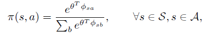
注意，$\phi_{sa}$ 和 $\theta$ 都是 $l$ 维的。 当 $f_w$ 满足compatible 条件，由公式（4）可得$\partial f_w \over \partial w$
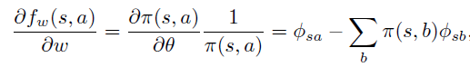
注意，$\partial f_w \over \partial w$ 也是 $l$维。$f_w$ 可以很自然的参数化为
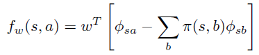
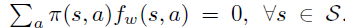
$A^{\pi}$具体定义如下
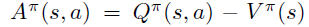
4. 函数近似的策略梯度收敛性证明
这一部分证明了在满足一定条件后，$\theta$ 可以收敛到局部最优点。
条件为
- Compatible 条件，公式（4）
- 任意两个 $\partial \pi \over \partial \theta$ 偏导是有限的，即
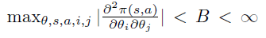
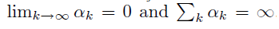
此时，当 $w_k$ 和 $\theta_k$ 按如下方式迭代一定能收敛到局部最优。
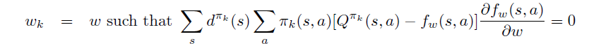
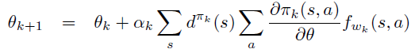
收敛到局部最优，即
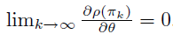
5. 策略梯度定理的两种情况下的证明
下面简单分解策略梯度的证明步骤。
A. 平均reward 定义下的证明
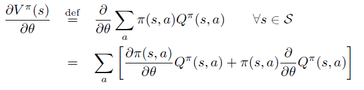
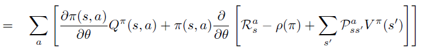
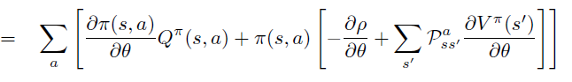
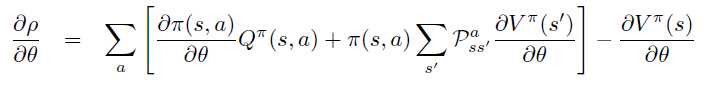
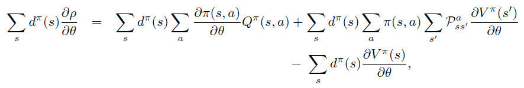
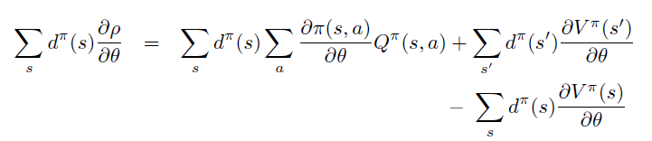
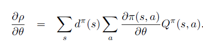
B. Start-state 定义下的证明
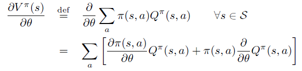
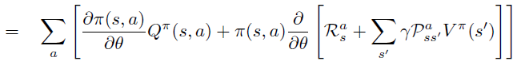
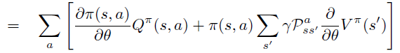
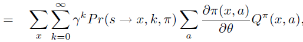
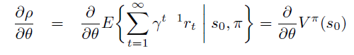
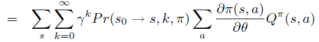
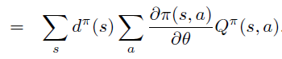
评论
shortnamefor Disqus. Please set it in_config.yml.